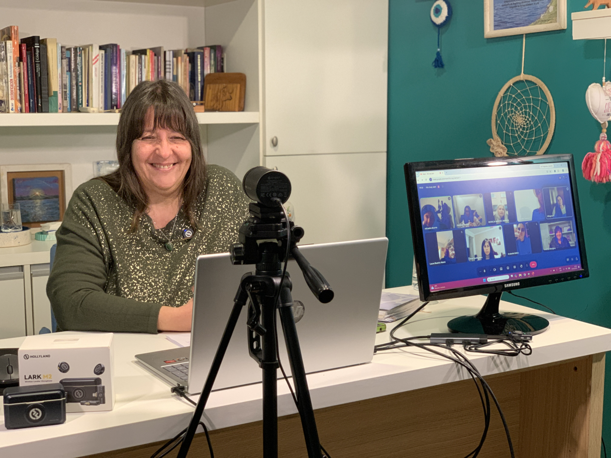
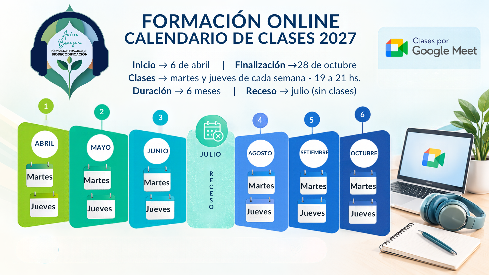

Encuentros en vivo
Espacios para compartir teoría, práctica, consultas y acompañamiento directo durante la cursada.
ESCUELA DE FORMACIÓN · INSCRIPCIONES 2027
Aprendé, practicá y compartí una experiencia de formación desde donde estés, con clases en vivo y acompañamiento durante todo el recorrido

Espacios para compartir teoría, práctica, consultas y acompañamiento directo durante la cursada.
Las clases en vivo se graban y quedan disponibles para repasar lo trabajado o recuperar un encuentro al que no pudiste asistir.
Recursos digitales, manuales, grupo institucional y seguimiento para sostener el recorrido.
Todo lo necesario para sostener un recorrido completo, flexible y acompañado.
La modalidad online combina clases en vivo, práctica y acompañamiento durante todo el recorrido, con materiales digitales y grabaciones para repasar lo trabajado.
Receso durante julio, sin clases.
6 de abril de 2027
19:00 a 21:00 hs.
Martes y jueves
Cursada + 6 meses

Una propuesta de formación para quienes desean aprender y profundizar sus conocimientos mediante encuentros en vivo y una organización semanal definida.
Para formarte desde cualquier lugar, sin necesidad de trasladarte.
Una cursada con días y horarios establecidos, que permite organizar el aprendizaje junto con las actividades personales y laborales.
Para sumar herramientas de comprensión biológica, emocional y práctica.
Ocho unidades de estudio y aprendizaje para una formación integral.
$60.000
Formaliza la inscripción y reserva la vacante para el ciclo 2027.
$210.000
De abril a junio de 2027.
Descubrí cómo se desarrolla la cursada, qué contenidos vas a encontrar y de qué manera se integra la teoría, la práctica y el acompañamiento durante todo el recorrido.
Dudas frecuentes sobre la modalidad online.
Consultá por la Formación Online en Biodecodificación.
Escribir por WhatsApp